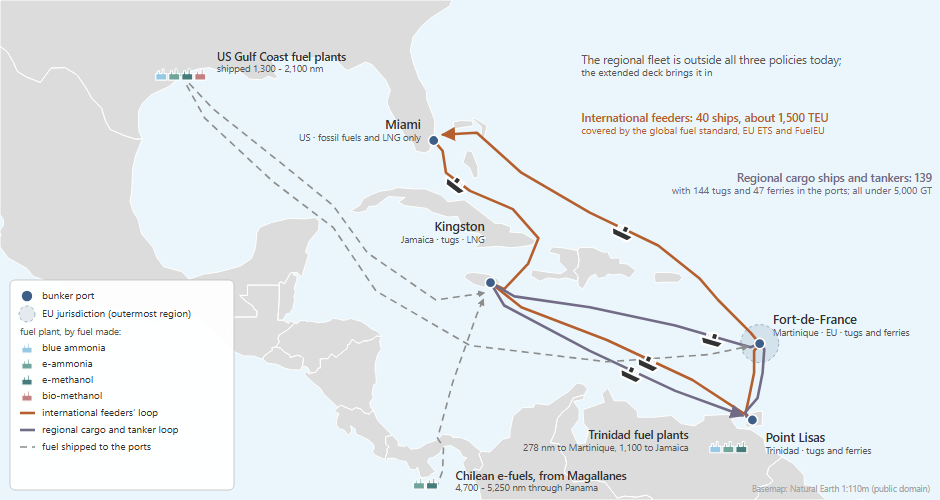

Caribbean shipping under global and EU rules#
Regional networks · decks simulations/examples/example_5/

How are a region’s own ships affected by global and EU rules, today and if extended to them?
The case#

Ships: 330 regional ships (144 tugs, 47 ferries, 85 general cargo ships and 54 small tankers), nearly all under 5,000 GT, and 40 container feeders of about 1,500 TEU. Fleet counts from the IMO CARES report (2024); the split of the cargo ships is INVENTED.
Routes: the feeders on a Miami - Kingston - Trinidad - Martinique loop; the regional ships inside and between the three Caribbean ports.
Fuels: blue and e-ammonia, e-methanol and bio-methanol, made in Trinidad, on the US Gulf Coast or in Chile and shipped in; LNG at Kingston and Miami only.
Policy: three decks, which differ in their policy lines only: no policy; today’s rules (a global fuel standard, the EU ETS and FuelEU) on the feeders only; the same rules extended to the regional ships.
Horizon: 2026 to 2050, yearly.
The regional fleet is not calibrated: with the library’s world-average ships it burns more fuel than CARES reports, so compare the decks with each other, not with the region’s real totals.
Results#

All ships together: today’s rules, which reach the feeders only, cut emissions in 2050 from 3.2 to 2.8 Mt CO2e a year; extended to the regional ships, they cut them to 2.0 Mt, with 35 % of the energy from alternative fuels. Summed over 2026 to 2050: 70, 63 and 55 Mt.
The deck#
# SPDX-FileCopyrightText: 2026 Fonden Mærsk Mc-Kinney Møller Center for Zero Carbon Shipping
# SPDX-License-Identifier: CC-BY-4.0
# EXAMPLE 5 - Caribbean shipping with no climate policy: the reference the
# other two decks are compared with.
# Sources and invented values: README.md.
DEFINE {
Load DefaultModelDefinition
Include "includes/fleet.inc"
Include "includes/route.inc"
Include "includes/ports.inc"
Include "includes/bunker_logistics.inc"
Include "includes/fuel_production.inc"
Include "includes/regions.inc"
Include "includes/producer.inc"
Load DefaultEmission
Load DefaultCalibration
Include "includes/report.inc"
Load DefaultPlot
}
EVENTS {
Include "includes/converter_available.inc"
Load DefaultTimeStepYearly
}
# SPDX-FileCopyrightText: 2026 Fonden Mærsk Mc-Kinney Møller Center for Zero Carbon Shipping
# SPDX-License-Identifier: CC-BY-4.0
# EXAMPLE 5 - Caribbean shipping under today's rules.
# The global fuel standard, the EU ETS and FuelEU cover the international ships
# only; the regional fleet, nearly all under 5,000 GT, is outside all three.
# Sources and invented values: README.md.
DEFINE {
Load DefaultModelDefinition
Include "includes/fleet.inc"
Include "includes/route.inc"
Include "includes/ports.inc"
Include "includes/bunker_logistics.inc"
Include "includes/fuel_production.inc"
Include "includes/regions.inc"
Include "includes/producer.inc"
Load DefaultEmission
Include "includes/policy_gfs.inc"
Include "includes/policy_eu.inc"
Load DefaultCalibration
Include "includes/report.inc"
Load DefaultPlot
}
EVENTS {
Include "includes/converter_available.inc"
Load DefaultTimeStepYearly
}
# SPDX-FileCopyrightText: 2026 Fonden Mærsk Mc-Kinney Møller Center for Zero Carbon Shipping
# SPDX-License-Identifier: CC-BY-4.0
# EXAMPLE 5 - Caribbean shipping with the rules extended to the regional fleet.
# The same three policies as example_5_current_rules.nav, now covering the
# regional ships too, as a regional adoption of the global fuel standard or the
# EU ETS review's proposal to bring ships of 400-5,000 GT in would.
# Sources and invented values: README.md.
DEFINE {
Load DefaultModelDefinition
Include "includes/fleet.inc"
Include "includes/route.inc"
Include "includes/ports.inc"
Include "includes/bunker_logistics.inc"
Include "includes/fuel_production.inc"
Include "includes/regions.inc"
Include "includes/producer.inc"
Load DefaultEmission
Include "includes/policy_gfs.inc"
Include "includes/policy_eu.inc"
Include "includes/extend_to_regional.inc"
Load DefaultCalibration
Include "includes/report.inc"
Load DefaultPlot
}
EVENTS {
Include "includes/converter_available.inc"
Load DefaultTimeStepYearly
}
# SPDX-FileCopyrightText: 2026 Fonden Mærsk Mc-Kinney Møller Center for Zero Carbon Shipping
# SPDX-License-Identifier: CC-BY-4.0
# FLEET - Caribbean shipping in two groups.
#
# reg_* the regional fleet: domestic and intra-Caribbean ships, nearly all
# under 5,000 GT. Counts from the IMO CARES report (2024), "Report on
# Decarbonization of Domestic Shipping: Insights from Africa and the
# Caribbean", p.19: 330 ships over 100 GT, 144 of them tugs and 47 ferries.
# intl_* the international ships that call at the region's hubs, all over
# 5,000 GT.
#
# Ship designs, costs, lifetimes, age profiles and trade growth are the library's
# own for each class. CARES finds no Caribbean domestic ship running on an
# alternative fuel, so every fleet starts on oil. The library's orderbooks are
# sized for the world fleet and are left out.
#
# NOT CALIBRATED, on purpose: with the library's world-average ships the
# regional fleet burns 419 kt of fuel in 2026, against 309 kt in CARES (+36 %).
# Caribbean ships are smaller (most CARES tugs are 250-300 GT).
# ---- regional: tugs (CARES: 144) -------------------------------------------
Copy Vessel "tug_ice_oil" "reg_tug_oil"
Copy Vessel "tug_ice_methane" "reg_tug_methane"
Copy Vessel "tug_ice_methanol" "reg_tug_methanol"
Copy Vessel "tug_ice_ammonia" "reg_tug_ammonia"
Fleet "reg_tug" {
Vessels = [Vessel("reg_tug_oil"), Vessel("reg_tug_methane"),
Vessel("reg_tug_methanol"), Vessel("reg_tug_ammonia")]
InitialVessels = 144
InitialSplit = [1.0, 0.0, 0.0, 0.0]
InitialAgeDistribution = [Curve("age_dist_tug_oil"), 0, 0, 0]
TradeGrowth = Forecast("trade_growth_tug")
AllowSpeedManagement = FALSE
}
# ---- regional: ferries (CARES: 47) -----------------------------------------
# The library's ferry has no ammonia design.
Copy Vessel "ferry_ice_oil" "reg_ferry_oil"
Copy Vessel "ferry_ice_methane" "reg_ferry_methane"
Copy Vessel "ferry_ice_methanol" "reg_ferry_methanol"
Fleet "reg_ferry" {
Vessels = [Vessel("reg_ferry_oil"), Vessel("reg_ferry_methane"),
Vessel("reg_ferry_methanol")]
InitialVessels = 47
InitialSplit = [1.0, 0.0, 0.0]
InitialAgeDistribution = [Curve("age_dist_ferry_oil"), 0, 0]
TradeGrowth = Forecast("trade_growth_ferry")
AllowSpeedManagement = FALSE
}
# ---- regional: cargo and tankers (CARES: the other 139) --------------------
# CARES lists general cargo, product and chemical tankers, ro-ro, container ships
# and offshore supply vessels, but gives their counts only in a chart that could
# not be read. INVENTED: the 139 split as 85 general cargo ships and 54 small
# tankers, with the other types folded into these two.
Copy Vessel "general_cargo_ice_oil" "reg_cargo_oil"
Copy Vessel "general_cargo_ice_methane" "reg_cargo_methane"
Copy Vessel "general_cargo_ice_methanol" "reg_cargo_methanol"
Copy Vessel "general_cargo_ice_ammonia" "reg_cargo_ammonia"
Fleet "reg_cargo" {
Vessels = [Vessel("reg_cargo_oil"), Vessel("reg_cargo_methane"),
Vessel("reg_cargo_methanol"), Vessel("reg_cargo_ammonia")]
InitialVessels = 85 # INVENTED split, see above
InitialSplit = [1.0, 0.0, 0.0, 0.0]
InitialAgeDistribution = [Curve("age_dist_general_cargo_oil"), 0, 0, 0]
TradeGrowth = Forecast("trade_growth_general_cargo")
AllowSpeedManagement = TRUE
MaximumSpeedChange = 0.4
}
Copy Vessel "tanker_7500_dwt_ice_oil" "reg_tanker_oil"
Copy Vessel "tanker_7500_dwt_ice_methane" "reg_tanker_methane"
Copy Vessel "tanker_7500_dwt_ice_methanol" "reg_tanker_methanol"
Copy Vessel "tanker_7500_dwt_ice_ammonia" "reg_tanker_ammonia"
Fleet "reg_tanker" {
Vessels = [Vessel("reg_tanker_oil"), Vessel("reg_tanker_methane"),
Vessel("reg_tanker_methanol"), Vessel("reg_tanker_ammonia")]
InitialVessels = 54 # INVENTED split, see above
InitialSplit = [1.0, 0.0, 0.0, 0.0]
InitialAgeDistribution = [Curve("age_dist_tanker_7500_dwt_oil"), 0, 0, 0]
TradeGrowth = Forecast("trade_growth_tanker")
set_fuel_conversion_cost("reg_tanker_oil", "reg_tanker_methanol", 9.4e6)
set_fuel_conversion_cost("reg_tanker_oil", "reg_tanker_ammonia", 14e6)
set_fuel_conversion_cost("reg_tanker_methane", "reg_tanker_ammonia", 16.7e6)
AllowSpeedManagement = TRUE
MaximumSpeedChange = 0.4
}
# ---- international: container feeders, US - Caribbean ---------------------
# Feeders in the region are 500-2,500 TEU (Caribbean Feeder Services: 13 ships of
# 500-1,700 TEU; Seaboard: 1,208-1,450 TEU; MundoMaritimo 2025-26), so the
# library's 1,500 TEU class. INVENTED: 40 ships.
Copy Vessel "container_1500_teu_ice_oil" "intl_feeder_oil"
Copy Vessel "container_1500_teu_ice_methane" "intl_feeder_methane"
Copy Vessel "container_1500_teu_ice_methanol" "intl_feeder_methanol"
Copy Vessel "container_1500_teu_ice_ammonia" "intl_feeder_ammonia"
Fleet "intl_feeder" {
Vessels = [Vessel("intl_feeder_oil"), Vessel("intl_feeder_methane"),
Vessel("intl_feeder_methanol"), Vessel("intl_feeder_ammonia")]
InitialVessels = 40 # INVENTED
InitialSplit = [1.0, 0.0, 0.0, 0.0]
InitialAgeDistribution = [Curve("age_dist_container_1500_teu_oil"), 0, 0, 0]
TradeGrowth = Forecast("trade_growth_container_1500_teu")
set_fuel_conversion_cost("intl_feeder_oil", "intl_feeder_methanol", 10.3e6)
set_fuel_conversion_cost("intl_feeder_oil", "intl_feeder_ammonia", 15.5e6)
set_fuel_conversion_cost("intl_feeder_methane", "intl_feeder_ammonia", 17.5e6)
AllowSpeedManagement = TRUE
MaximumSpeedChange = 0.5
}
# SPDX-FileCopyrightText: 2026 Fonden Mærsk Mc-Kinney Møller Center for Zero Carbon Shipping
# SPDX-License-Identifier: CC-BY-4.0
# WHEN THE NEW ENGINES CAN BE ORDERED - the library's DefaultConverterAvailable
# dates for each class, under this deck's fleet names (its patterns, "tug*" and
# the like, do not match them).
Start
Fleet "*" {
set_allow_vessel("*ammonia*", FALSE)
set_allow_vessel("*methanol*", FALSE)
}
Fleet "reg_tug" {
set_allow_vessel("*methanol*", TRUE)
}
Fleet "reg_ferry" {
set_allow_vessel("*methanol*", TRUE)
}
Fleet "intl_feeder" {
set_allow_vessel("*methanol*", TRUE)
}
Date "01-01-2027"
Fleet "reg_tug" {
set_allow_vessel("*ammonia*", TRUE)
}
Fleet "intl_feeder" {
set_allow_vessel("*ammonia*", TRUE)
}
Date "01-01-2030"
Fleet "reg_tanker" {
set_allow_vessel("*ammonia*", TRUE)
set_allow_vessel("*methanol*", TRUE)
}
Fleet "reg_cargo" {
set_allow_vessel("*ammonia*", TRUE)
set_allow_vessel("*methanol*", TRUE)
}
End
# SPDX-FileCopyrightText: 2026 Fonden Mærsk Mc-Kinney Møller Center for Zero Carbon Shipping
# SPDX-License-Identifier: CC-BY-4.0
# ROUTES - three Caribbean ports and Miami.
#
# Each Caribbean port stands for a group of islands:
# jamaica Kingston, the Greater Antilles transhipment hub
# trinidad Port of Spain and Point Lisas, with Tobago
# martinique Fort-de-France, for the French Antilles (an EU outermost region)
#
# Distances: great-circle between the ports, plus 10 % for the sea route
# (INVENTED factor; the research found no citable sea-distance table and puts
# real routes 5-15 % above great-circle). Miami - Kingston is INVENTED at 700 nm,
# since the great circle (505 nm) crosses Cuba.
#
# Speeds, time at sea and capacity use come from each class's operational
# profile in the library, unless marked otherwise.
Vessel "reg_tug_*" { Route = Route("reg_tug_route") }
Vessel "reg_ferry_*" { Route = Route("reg_ferry_route") }
Vessel "reg_cargo_*" { Route = Route("reg_cargo_route") }
Vessel "reg_tanker_*" { Route = Route("reg_tanker_route") }
Vessel "intl_feeder_*" { Route = Route("intl_feeder_route") }
# ---- tugs work inside their port --------------------------------------------
# INVENTED: tugs spread over the three ports by 2025 container throughput
# (Kingston 2.66 M TEU, Port of Spain + Point Lisas 0.57 M, Fort-de-France
# 0.19 M; R.J. Sánchez, PortEconomics, 2 Oct 2026), as a proxy for harbour work.
Route "reg_tug_route" {
RouteType = REGIONAL_TRIP
Ports = [Port("jamaica"), Port("trinidad"), Port("martinique")]
PortCalls = [39, 8.5, 2.5] # the library's 50 calls a year, split as above
TimeAtSea = 0.22
ConditionDistribution = [1]
Speeds = [10.7]
CapacityUtilizations = [0.8]
set_voyage_distribution("jamaica", "jamaica", 0.78)
set_voyage_distribution("trinidad", "trinidad", 0.17)
set_voyage_distribution("martinique", "martinique", 0.05)
}
# ---- ferries: Trinidad - Tobago, and around the French Antilles --------------
# INVENTED: half the ferry work in each group; none in Jamaica.
Route "reg_ferry_route" {
RouteType = REGIONAL_TRIP
Ports = [Port("trinidad"), Port("martinique")]
PortCalls = [25, 25]
TimeAtSea = 0.5
ConditionDistribution = [1]
Speeds = [14]
CapacityUtilizations = [0.75]
set_voyage_distribution("trinidad", "trinidad", 0.5)
set_voyage_distribution("martinique", "martinique", 0.5)
}
# ---- regional cargo and tankers: a loop out of Trinidad ----------------------
# Great-circle legs: Point Lisas - Fort-de-France 253 nm, Fort-de-France -
# Kingston 928 nm, Kingston - Point Lisas 1,000 nm.
Route "reg_cargo_route" {
RouteType = ROUND_TRIP
Ports = [Port("trinidad"), Port("martinique"), Port("jamaica")]
Distances = [278, 1021, 1100]
Speeds = [11.2, 11.2, 11.2]
CapacityUtilizations = [0.5, 0.5, 0.5]
# library time at sea 0.548: 8.9 days sailing per loop, 7.4 days in port
PortDurations = [2.45, 2.45, 2.45]
}
Route "reg_tanker_route" {
RouteType = ROUND_TRIP
Ports = [Port("trinidad"), Port("martinique"), Port("jamaica")]
Distances = [278, 1021, 1100]
# INVENTED: 10.5 knots, the middle of the library's 6.5-14.5 range
Speeds = [10.5, 10.5, 10.5]
# INVENTED: loaded at Trinidad's terminals, half discharged at each call
CapacityUtilizations = [1.0, 0.5, 0.0]
# library time at sea 0.3: 9.5 days sailing per loop, 22.2 days in port
PortDurations = [7.4, 7.4, 7.4]
}
# ---- international feeders: Miami and the three Caribbean ports --------------
# Great-circle: Fort-de-France - Miami 1,266 nm.
Route "intl_feeder_route" {
RouteType = ROUND_TRIP
Ports = [Port("miami"), Port("jamaica"), Port("trinidad"), Port("martinique")]
Distances = [700, 1100, 278, 1393]
# INVENTED: 13 knots, the middle of the library's 7.5-18.5 range
Speeds = [13, 13, 13, 13]
CapacityUtilizations = [0.7, 0.7, 0.7, 0.7]
# library: 72 calls a year at time at sea 0.5, so 2.5 days per call
PortDurations = [2.5, 2.5, 2.5, 2.5]
}
# SPDX-FileCopyrightText: 2026 Fonden Mærsk Mc-Kinney Møller Center for Zero Carbon Shipping
# SPDX-License-Identifier: CC-BY-4.0
# PORTS - what can be bunkered where.
#
# Fossil fuel oil is sold everywhere at the library's global price. Balboa, the
# region's main bunkering port, averaged 511 USD/t VLSFO in 2025, close to
# Singapore (507.5) and 25 USD/t under the G20 index (Ship & Bunker, 2026).
#
# INVENTED: no Caribbean port bunkers LNG today; Jamaica has the region's
# regasification terminal (0.4 Bcf/d, US EIA), so LNG is offered there and in
# Miami only. The four new fuels can be bunkered at the three Caribbean ports,
# delivered from where they are made (bunker_logistics.inc). Miami offers
# fossil fuels only, so the feeders take their new fuels in the Caribbean.
Port "miami" {
set_bunkering_allowed("liquefied_natural_gas", TRUE)
}
Port "jamaica" {
set_bunkering_allowed("liquefied_natural_gas", TRUE)
set_bunkering_allowed("ammonia_blue", TRUE)
set_bunkering_allowed("ammonia_electro", TRUE)
set_bunkering_allowed("methanol_electro", TRUE)
set_bunkering_allowed("methanol_bio", TRUE)
}
Port "trinidad" {
set_bunkering_allowed("ammonia_blue", TRUE)
set_bunkering_allowed("ammonia_electro", TRUE)
set_bunkering_allowed("methanol_electro", TRUE)
set_bunkering_allowed("methanol_bio", TRUE)
}
Port "martinique" {
set_bunkering_allowed("ammonia_blue", TRUE)
set_bunkering_allowed("ammonia_electro", TRUE)
set_bunkering_allowed("methanol_electro", TRUE)
set_bunkering_allowed("methanol_bio", TRUE)
}
# Last, so it reaches every port above: a wildcard only applies to the ports
# that exist when it is read.
Port "*" {
set_bunkering_allowed("fossil_fuel_oil", TRUE)
set_bunker_price_overwrite("fossil_fuel_oil", Forecast("fossil_fuel_oil_price_global"))
set_bunker_wtt_overwrite("fossil_fuel_oil", "carbon_dioxide", Forecast("fossil_fuel_oil_wtt_carbon_dioxide"))
set_bunker_price_overwrite("liquefied_natural_gas", Forecast("liquefied_natural_gas_price_global"))
set_bunker_wtt_overwrite("liquefied_natural_gas", "carbon_dioxide", Forecast("liquefied_natural_gas_wtt_carbon_dioxide"))
set_bunker_wtt_overwrite("liquefied_natural_gas", "methane", Forecast("liquefied_natural_gas_wtt_methane"))
}
# SPDX-FileCopyrightText: 2026 Fonden Mærsk Mc-Kinney Møller Center for Zero Carbon Shipping
# SPDX-License-Identifier: CC-BY-4.0
# BUNKER LOGISTICS - from where a fuel is made to the port that sells it.
# Fossil fuels are global commodities with a quoted price; the new fuels pay
# distance x rate.
BunkerLogistics {
LiquidMarketFuels = [Fuel("fossil_fuel_oil"), Fuel("liquefied_natural_gas")]
# Trinidad's plants, at Point Lisas, to each port (nm, the route.inc legs)
set_distance("caribbean", "trinidad", 15) # Point Lisas - Port of Spain
set_distance("caribbean", "martinique", 278)
set_distance("caribbean", "jamaica", 1100)
# INVENTED: fuels from the US Gulf Coast (Houston)
set_distance("americas", "jamaica", 1300)
set_distance("americas", "martinique", 2000)
set_distance("americas", "trinidad", 2100)
# Magallanes to each port through the Panama Canal, measured along a sea
# route drawn offshore (the Atlantic route is longer: 5,560 nm to Trinidad).
# Canal tolls are not counted.
set_distance("chile", "jamaica", 4700)
set_distance("chile", "trinidad", 5250)
set_distance("chile", "martinique", 5250)
# INVENTED: USD per ton per nautical mile, the rate example_4 invented too
set_transport_cost("*", 0.02)
}
# SPDX-FileCopyrightText: 2026 Fonden Mærsk Mc-Kinney Møller Center for Zero Carbon Shipping
# SPDX-License-Identifier: CC-BY-4.0
# FUEL PRODUCTION - fossil fuels as traded commodities; the new fuels made either
# in Trinidad, on the US Gulf Coast ("americas") or in Chile, and shipped in.
# The Gulf Coast makes all four; Trinidad all but bio-methanol; Chile the two
# e-fuels. Which wins at each port is
# left to cost and delivery distance (bunker_logistics.inc).
#
# Only siting and financing are set here. Import Plant does not bring the cost of
# capital (the library sets it in DefaultPlant), so each plant states its own.
# Capacities, lead times, lifetimes and process economics come from the library.
# ---- fossil (global commodities, no production chain modelled) --------------
Import Fuel "fossil_fuel_oil"
Import Fuel "liquefied_natural_gas"
# ---- Trinidad blue ammonia: natural gas reforming with carbon capture --------
Import Fuel "ammonia_blue"
Import Plant "plant_ammonia_blue"
Plant "plant_ammonia_blue" {
Region = Region("caribbean")
Source = Source("grid")
CostOfCapital = Forecast("cost_of_capital_plant_blue_americas")
}
Import Process "ammonia_synthesis_blue"
Import Process "autothermal_reforming"
Import Process "nitrogen_air_separation"
Import Feedstock "natural_gas"
# ---- Trinidad e-ammonia: electrolysis on dedicated renewables ----------------
Import Fuel "ammonia_electro"
Import Plant "plant_ammonia_electro_alkaline"
Plant "plant_ammonia_electro_alkaline" {
Region = Region("caribbean")
Source = Source("renewable")
CostOfCapital = Forecast("cost_of_capital_plant_electro_americas")
}
Import Process "ammonia_synthesis_electro_alkaline"
Import Process "hydrogen_electro_alkaline"
Import Process "electrolysis_stack_alkaline"
# ---- Trinidad e-methanol: hydrogen and biogenic CO2 --------------------------
Import Fuel "methanol_electro"
Import Plant "plant_methanol_electro_alkaline"
Plant "plant_methanol_electro_alkaline" {
Region = Region("caribbean")
Source = Source("renewable")
CostOfCapital = Forecast("cost_of_capital_plant_electro_americas")
}
Import Process "methanol_synthesis_electro_alkaline"
Import Feedstock "carbon_dioxide_biogenic"
# ---- bio-methanol from the US Gulf Coast, shipped in ------------------
Import Fuel "methanol_bio"
Import Plant "plant_methanol_bio_gasification"
Plant "plant_methanol_bio_gasification" {
Region = Region("americas")
Source = Source("grid")
CostOfCapital = Forecast("cost_of_capital_plant_bio_americas")
}
Import Process "methanol_synthesis_bio_gasification"
Import Feedstock "feedstock_biomethanol_gasification"
# ---- the same three pathways on the US Gulf Coast, shipped in ---------------
# Copy, not Import: the Trinidad plants already carry the library names.
Copy Plant "plant_ammonia_blue" "plant_ammonia_blue_americas"
Plant "plant_ammonia_blue_americas" {
Region = Region("americas")
Source = Source("grid")
CostOfCapital = Forecast("cost_of_capital_plant_blue_americas")
}
Copy Plant "plant_ammonia_electro_alkaline" "plant_ammonia_electro_alkaline_americas"
Plant "plant_ammonia_electro_alkaline_americas" {
Region = Region("americas")
Source = Source("renewable")
CostOfCapital = Forecast("cost_of_capital_plant_electro_americas")
}
Copy Plant "plant_methanol_electro_alkaline" "plant_methanol_electro_alkaline_americas"
Plant "plant_methanol_electro_alkaline_americas" {
Region = Region("americas")
Source = Source("renewable")
CostOfCapital = Forecast("cost_of_capital_plant_electro_americas")
}
# ---- Chilean e-fuels: cheap wind, far away, shipped in through Panama --------
Copy Plant "plant_ammonia_electro_alkaline" "plant_ammonia_electro_alkaline_chile"
Plant "plant_ammonia_electro_alkaline_chile" {
Region = Region("chile")
Source = Source("renewable")
CostOfCapital = Forecast("cost_of_capital_plant_electro_americas")
}
Copy Plant "plant_methanol_electro_alkaline" "plant_methanol_electro_alkaline_chile"
Plant "plant_methanol_electro_alkaline_chile" {
Region = Region("chile")
Source = Source("renewable")
CostOfCapital = Forecast("cost_of_capital_plant_electro_americas")
}
# ---- shared inputs ----------------------------------------------------------
Import Feedstock "demineralized_water"
Import Source "renewable"
Import Source "grid"
# ---- fuels named by the library's EU regulations, never bunkered here --------
Import Fuel "fatty_acid_methyl_ester"
Import Fuel "diesel_electro"
Import Fuel "methane_bio"
Import Fuel "methane_electro"
# SPDX-FileCopyrightText: 2026 Fonden Mærsk Mc-Kinney Møller Center for Zero Carbon Shipping
# SPDX-License-Identifier: CC-BY-4.0
# REGIONS - where fuels get made, and what making them costs.
#
# "caribbean" is new to this deck: Trinidad's gas and its industrial estate at
# Point Lisas. "americas" is the library's region, used for bio-methanol only.
Region "caribbean" {
# INVENTED proxy: the library's Americas renewable cost. The one Caribbean
# figure found is dated: Jamaica's solar contracts at about 85 USD/MWh (2016-17).
set_source_opex("renewable", Forecast("electricity_cost_americas_mid"))
# Trinidad's gas-fired grid
set_source_opex("grid", Forecast("electricity_cost_trinidad_grid"))
set_source_wtt("grid", "carbon_dioxide", Forecast("grid_emissions_trinidad"))
# The library's global gas price. Trinidad's gas is short: Nutrien closed at
# Point Lisas in October 2025 and three of Proman's five methanol plants are down.
set_feedstock_cost("natural_gas", Forecast("natural_gas_price_global"))
}
# Trinidad & Tobago residential tariff, June 2025, gas-subsidised: 0.062 USD/kWh
# (GlobalPetrolPrices). INVENTED: held flat.
Forecast "electricity_cost_trinidad_grid" {
Table = [
"01-01-2025" 62
"01-01-2050" 62
]
Extrapolate = FLAT
}
# Trinidad & Tobago lifecycle grid intensity, 2024: 682 gCO2e/kWh (Ember via Our
# World in Data). INVENTED: held flat.
Forecast "grid_emissions_trinidad" {
Table = [
"01-01-2025" 0.682
"01-01-2050" 0.682
]
Extrapolate = FLAT
}
# Chile's Magallanes region, the wind resource example_4 builds on. INVENTED
# proxy: the library has no Chile-specific cost, so the library's Americas LOW
# case stands for its wind (49 USD/MWh in 2026, 33 by 2050, against the mid
# case's 62 and 41 used for Trinidad and the Gulf Coast).
Region "chile" {
set_source_opex("renewable", Forecast("electricity_cost_americas_low"))
set_source_opex("grid", Forecast("electricity_cost_americas_low"))
set_source_wtt("grid", "carbon_dioxide", Forecast("grid_emissions_americas"))
}
Region "americas" {
set_source_opex("renewable", Forecast("electricity_cost_americas_mid"))
set_source_opex("grid", Forecast("electricity_cost_americas_mid"))
set_source_wtt("grid", "carbon_dioxide", Forecast("grid_emissions_americas"))
}
# Production economics that do not depend on the site, from the library's
# DefaultRegion.
Region "*" {
# ---- feedstocks ----
set_feedstock_cost("demineralized_water", Forecast("demineralized_water_cost"))
set_feedstock_cost("carbon_dioxide_biogenic", Forecast("carbon_dioxide_biogenic_cost"))
set_feedstock_cost("feedstock_biomethanol_gasification", Forecast("feedstock_biomethanol_gasification_cost"))
set_feedstock_wtt("carbon_dioxide_biogenic", "carbon_dioxide", Forecast("carbon_dioxide_biogenic_capture_rate"))
set_feedstock_wtt("natural_gas", "carbon_dioxide", Forecast("natural_gas_wtt_carbon_dioxide"))
set_feedstock_wtt("natural_gas", "methane", Forecast("natural_gas_wtt_methane"))
# ---- blue hydrogen: autothermal reforming, captured CO2 stored ----
set_process_capex("autothermal_reforming", Timetable("autothermal_reforming_capex"))
set_process_opex("autothermal_reforming", <Timetable("autothermal_reforming_opex") + Forecast("carbon_transport_storage_cost") * Forecast("autothermal_reforming_capture_rate") * Variable("carbon_dioxide_per_hydrogen_blue")>)
set_process_energy("autothermal_reforming", Forecast("autothermal_reforming_energy"))
set_process_wtt("autothermal_reforming", "carbon_dioxide", <(1. - Forecast("autothermal_reforming_capture_rate")) * Variable("carbon_dioxide_per_hydrogen_blue")>)
# ---- e-hydrogen: alkaline electrolysis ----
set_process_capex("electrolysis_stack_alkaline", Timetable("electrolysis_stack_alkaline_capex"))
set_process_opex("electrolysis_stack_alkaline", Timetable("electrolysis_stack_alkaline_opex"))
set_process_energy("electrolysis_stack_alkaline", Forecast("electrolysis_stack_alkaline_energy"))
set_process_lifetime("electrolysis_stack_alkaline", Forecast("electrolysis_stack_alkaline_lifetime"))
set_process_replacement("electrolysis_stack_alkaline", Forecast("electrolysis_stack_alkaline_replacement"))
set_process_capex("hydrogen_electro_alkaline", Timetable("hydrogen_electro_alkaline_capex"))
set_process_opex("hydrogen_electro_alkaline", Timetable("hydrogen_electro_alkaline_opex"))
set_process_energy("hydrogen_electro_alkaline", Forecast("hydrogen_electro_alkaline_energy"))
set_process_lifetime("hydrogen_electro_alkaline", Forecast("hydrogen_electro_alkaline_lifetime"))
set_process_replacement("hydrogen_electro_alkaline", Forecast("hydrogen_electro_alkaline_replacement"))
# ---- ammonia, blue and electro ----
set_process_capex("ammonia_synthesis_*", Timetable("ammonia_synthesis_capex"))
set_process_opex("ammonia_synthesis_*", Timetable("ammonia_synthesis_opex"))
set_process_energy("ammonia_synthesis_*", Forecast("ammonia_synthesis_energy"))
# ---- e-methanol: hydrogen + biogenic CO2 ----
set_process_capex("methanol_synthesis_electro_*", Timetable("methanol_synthesis_electro_capex"))
set_process_opex("methanol_synthesis_electro_*", Timetable("methanol_synthesis_electro_opex"))
set_process_energy("methanol_synthesis_electro_*", Forecast("methanol_synthesis_electro_energy"))
set_process_wtt("methanol_synthesis_electro_*", "carbon_dioxide",
<Variable("methanol_carbon_dioxide_conversion") - Variable("carbon_dioxide_per_methanol")>)
# ---- bio-methanol: gasified biomass ----
set_process_capex("methanol_synthesis_bio_gasification", Forecast("methanol_synthesis_bio_gasification_capex"))
set_process_opex("methanol_synthesis_bio_gasification", Forecast("methanol_synthesis_bio_gasification_opex"))
set_process_energy("methanol_synthesis_bio_gasification", Forecast("methanol_synthesis_bio_gasification_energy"))
set_process_wtt("methanol_synthesis_bio_gasification", "carbon_dioxide", <-Variable("carbon_dioxide_per_methanol")>)
# ---- plant to quayside within a region ----
set_transport_cost("truck", 0.0)
set_transport_wtt("truck", "carbon_dioxide", Forecast("truck_emissions"))
}
# A command taking a node name as a string key needs that node to exist already.
Import Transport "truck"
# SPDX-FileCopyrightText: 2026 Fonden Mærsk Mc-Kinney Møller Center for Zero Carbon Shipping
# SPDX-License-Identifier: CC-BY-4.0
# PRODUCERS - who decides to build a fuel plant for this region's ships.
#
# The library's build rate and feedstock pools are global. This deck is a few
# hundred ships, so each producer gets a slice of them. Trinidad already makes
# about 5 Mt of ammonia and 6 Mt of methanol a year (The Energy Year, 2024), but
# grey and for export; the slices below are for new, low-emission plants serving
# these ships only.
Producer "producer_trinidad" {
Plants = [Plant("plant_ammonia_blue"),
Plant("plant_ammonia_electro_alkaline"),
Plant("plant_methanol_electro_alkaline")]
MaximumDevelopment = <Forecast("epc_global_capacity_mid") * Forecast("epc_global_share_shipping") * Variable("caribbean_share_of_build")>
set_feed_constraint("carbon_dioxide_biogenic", <Forecast("carbon_dioxide_biogenic_availability") * Forecast("carbon_dioxide_biogenic_share_shipping") * Variable("caribbean_share_of_feedstock")>)
}
# The US Gulf Coast builds for these ships too, out of the same slice of
# plant-building capacity as Trinidad (INVENTED, see below).
Producer "producer_americas" {
Plants = [Plant("plant_methanol_bio_gasification"),
Plant("plant_ammonia_blue_americas"),
Plant("plant_ammonia_electro_alkaline_americas"),
Plant("plant_methanol_electro_alkaline_americas")]
MaximumDevelopment = <Forecast("epc_global_capacity_mid") * Forecast("epc_global_share_shipping") * Variable("caribbean_share_of_build")>
set_feed_constraint("carbon_dioxide_biogenic", <Forecast("carbon_dioxide_biogenic_availability") * Forecast("carbon_dioxide_biogenic_share_shipping") * Variable("caribbean_share_of_feedstock")>)
set_feed_constraint("feedstock_biomethanol_gasification", <Forecast("feedstock_biomethanol_gasification_availability") * Forecast("feedstock_biomethanol_gasification_share_shipping") * Variable("caribbean_share_of_feedstock")>)
}
# Chile builds e-fuels for these ships too, out of the same slice (INVENTED).
Producer "producer_chile" {
Plants = [Plant("plant_ammonia_electro_alkaline_chile"),
Plant("plant_methanol_electro_alkaline_chile")]
MaximumDevelopment = <Forecast("epc_global_capacity_mid") * Forecast("epc_global_share_shipping") * Variable("caribbean_share_of_build")>
set_feed_constraint("carbon_dioxide_biogenic", <Forecast("carbon_dioxide_biogenic_availability") * Forecast("carbon_dioxide_biogenic_share_shipping") * Variable("caribbean_share_of_feedstock")>)
}
# INVENTED: the region's share of shipping's plant-building capacity.
Variable "caribbean_share_of_build" {
Value = 0.02
}
# INVENTED: the region's share of shipping's biogenic CO2 and biomass. CARES puts
# its domestic shipping at about 1 Mt CO2e a year, against roughly 1,000 Mt for
# world shipping, so 0.1 %; doubled for the international ships calling here.
Variable "caribbean_share_of_feedstock" {
Value = 0.002
}
# SPDX-FileCopyrightText: 2026 Fonden Mærsk Mc-Kinney Møller Center for Zero Carbon Shipping
# SPDX-License-Identifier: CC-BY-4.0
# GLOBAL FUEL STANDARD - the IMO Net-Zero Framework as approved in draft at
# MEPC 83 (April 2025). Not adopted: the October 2025 session adjourned for a
# year, and the extraordinary session resumes on 4 December 2026.
#
# It caps a ship's well-to-wake GHG fuel intensity (GFI) against the 2008
# reference, 93.3 gCO2e/MJ, at two levels:
# direct compliance target -17 % in 2028, -21 % in 2030, -43 % in 2035;
# a deficit below it costs 100 USD/t CO2e (Tier 1)
# base target -4 % in 2028, -8 % in 2030, -30 % in 2035;
# a deficit below it costs 380 USD/t CO2e (Tier 2)
# Here they are two regulations that add up: gfs_tier_1 charges 100 below the
# direct target and gfs_tier_2 a further 280 below the base target, so a ton
# beyond the base target costs 380 in all.
# The framework restricts how surplus units can be used; this deck lets them pool freely.
#
# Applies to ships of 5,000 GT and above on international voyages (IMO FAQ), so
# the international ships (intl_*) only. A deck that extends it to the regional
# ships adds set_include_vessel("reg_*", TRUE) after this file.
#
# INVENTED beyond the text: the prices are set for 2028-2030 only and the
# targets end in 2035; both are held flat afterwards.
Regulation "gfs_tier_1" {
Measure = INTENSITY
Scheme = FLEXIBLE
Scope = WTW
IncludeSlip = TRUE
Emissions = Emission("*")
Fuels = Fuel("*")
Jurisdiction = [Port("jamaica"), Port("trinidad"), Port("martinique"), Port("miami")]
RemedialCost = Forecast("gfs_tier_1_price")
SharedThreshold = Forecast("gfs_direct_compliance_target")
set_include_vessel("intl_*", TRUE)
}
Regulation "gfs_tier_2" {
Measure = INTENSITY
Scheme = FLEXIBLE
Scope = WTW
IncludeSlip = TRUE
Emissions = Emission("*")
Fuels = Fuel("*")
Jurisdiction = [Port("jamaica"), Port("trinidad"), Port("martinique"), Port("miami")]
RemedialCost = Forecast("gfs_tier_2_extra_price")
SharedThreshold = Forecast("gfs_base_target")
set_include_vessel("intl_*", TRUE)
}
# fraction of the 2008 reference that is allowed
Forecast "gfs_direct_compliance_target" {
Table = [
"01-01-2025" 1.00
"31-12-2027" 1.00
"01-01-2028" 0.83
"01-01-2030" 0.79
"01-01-2035" 0.57
]
Multiplier = 93.3
Extrapolate = FLAT
}
Forecast "gfs_base_target" {
Table = [
"01-01-2025" 1.00
"31-12-2027" 1.00
"01-01-2028" 0.96
"01-01-2030" 0.92
"01-01-2035" 0.70
]
Multiplier = 93.3
Extrapolate = FLAT
}
Forecast "gfs_tier_1_price" {
Table = [
"01-01-2025" 0
"31-12-2027" 0
"01-01-2028" 100
"01-01-2050" 100
]
Extrapolate = FLAT
}
Forecast "gfs_tier_2_extra_price" {
Table = [
"01-01-2025" 0
"31-12-2027" 0
"01-01-2028" 280
"01-01-2050" 280
]
Extrapolate = FLAT
}
# SPDX-FileCopyrightText: 2026 Fonden Mærsk Mc-Kinney Møller Center for Zero Carbon Shipping
# SPDX-License-Identifier: CC-BY-4.0
# EU ETS AND FUELEU - the library's own two regulations, with Martinique, an EU
# outermost region, as the one EU port.
#
# Both regulations count a leg (one sailing from one port to the next) in full
# between two EU ports and at half between an EU and a non-EU port. The
# exemptions for voyages within an outermost region (EU ETS until 2030, FuelEU
# until 2029 at the member state's request) touch only the regional ships, which
# are under 5,000 GT and outside both anyway.
#
# Both apply to ships of 5,000 GT and above, so they cover the international
# ships (intl_*) only. A deck that extends them to the regional ships adds
# set_include_vessel("reg_*", TRUE) after this file.
Import Regulation "eu_ets"
Import Regulation "fuel_eu"
Regulation "eu_ets" {
Jurisdiction = [Port("martinique")]
set_include_vessel("*", FALSE)
set_include_vessel("intl_*", TRUE)
}
Regulation "fuel_eu" {
Jurisdiction = [Port("martinique")]
set_include_vessel("*", FALSE)
set_include_vessel("intl_*", TRUE)
}
# SPDX-FileCopyrightText: 2026 Fonden Mærsk Mc-Kinney Møller Center for Zero Carbon Shipping
# SPDX-License-Identifier: CC-BY-4.0
# EXTENSION - the four regulations also cover the regional ships (reg_*).
# Read after policy_gfs.inc and policy_eu.inc.
Regulation "gfs_tier_1" {
set_include_vessel("reg_*", TRUE)
}
Regulation "gfs_tier_2" {
set_include_vessel("reg_*", TRUE)
}
Regulation "eu_ets" {
set_include_vessel("reg_*", TRUE)
}
Regulation "fuel_eu" {
set_include_vessel("reg_*", TRUE)
}
# SPDX-FileCopyrightText: 2026 Fonden Mærsk Mc-Kinney Møller Center for Zero Carbon Shipping
# SPDX-License-Identifier: CC-BY-4.0
# REPORT - one Excel file per run, for comparing the scenarios.
Report "output" {
Directory = "./reports"
add_fleet_property("*", ExistingVessels)
add_fleet_property("*", Newbuilds)
add_fleet_property("*", FuelConversions)
add_fleet_property("*", FuelTypeEnergy)
add_fleet_property("*", TotalEquivalentWTW)
add_fleet_property("*", FuelExpenses)
add_fleet_property("*", RegulationExpenses)
add_port_property("*", BunkerIntensityPrice)
}
Build it with an AI assistant#
This deck was built from the prompt below by an assistant that saw only the prompt. A new regional network starts from it, or from the case whose routes look most like yours. Session 5 shows how to use it.
Full prompt for this case
A region’s own ships, and rules that do not reach them yet. 330 domestic and intra-Caribbean ships (tugs, ferries, general cargo ships and small tankers), nearly all under 5,000 GT, and 40 container feeders on a Miami - Jamaica - Trinidad - Martinique loop, 2026 to 2050. New fuels are made in Trinidad, on the US Gulf Coast or in Chile, and shipped in. Three decks: no policy; today’s rules, a global fuel standard as drafted at the IMO plus the EU ETS and FuelEU with Martinique as the EU port, which cover the feeders only; and the same rules extended to the regional ships. The question is how the region’s own ships are affected, today and if the rules reached them.
Built on public data, with gaps. The fleet counts come from the IMO CARES report on domestic shipping (2024). The split of the cargo ships, the distances, speeds, delivery costs and the region’s share of plant building are INVENTED, and the prompt marks each one. The regional fleet is not calibrated: with the library’s world-average ships it burns more fuel than CARES reports, so compare the decks with each other, not with the region’s real totals.
Tested: 2026-10-28, built cold twice. After the first build the prompt gained explicit port times, speed management and production pathways; the second build ran first time with no warnings: the regional ships burnt 418.5 kt in 2026 (CARES: 309 kt), and summed 47.9 Mt without policy against 39.3 Mt with the rules extended to them. It was one of Session 5’s examples until it moved here the same day.
You are helping me build a simulation study for Navigate, the shipping
decarbonisation model. Write the files yourself; do not only
describe them.
Before writing anything, find the Navigate repository on my machine (a folder
usually named navigate-zcs; ask me where it is if you cannot find it), then read
docs/workshop/building-a-deck.md in it and follow it. It
says how Navigate works, how to run a deck and read its results, and the rules
every deck follows. This prompt gives the case.
THE DECKS
A new folder, simulations/user/caribbean/, holding three decks that differ in
their policy Include lines only:
- no_policy.nav: no policy at all
- current_rules.nav: a global fuel standard, the EU ETS and FuelEU, covering
the international ships only, as today
- extended.nav: the same three, extended to the regional ships too, in
includes/extend_to_regional.inc, read after the policy files
THE CASE
Caribbean shipping, 2026 to 2050, yearly steps. The question: how are the
region's own ships affected by global and EU policy, today and if the rules
were extended to them?
- Regional fleet: domestic and intra-Caribbean ships, nearly all under
5,000 GT, so outside all three policies today. 144 tugs and 47 ferries (IMO
CARES 2024, "Report on Decarbonization of Domestic Shipping: Insights from
Africa and the Caribbean", p.19), plus 85 general cargo ships and 54 small
tankers (INVENTED: CARES's other 139 ships, split between the two). Library
classes tug, ferry, general_cargo and tanker_7500_dwt.
- International fleet: 40 container feeders (INVENTED count) of the library's
container_1500_teu class; the region's feeders are 500-2,500 TEU.
- Every fleet starts on fuel oil: CARES finds no alternative-fuel ship in the
region. Leave out the library's orderbooks, which are sized for the world
fleet. The library's ferry has no ammonia design.
- Ports: jamaica (Kingston), trinidad (Port of Spain and Point Lisas),
martinique (Fort-de-France, an EU outermost region, so the EU's one port
here) and miami.
- Routes:
- tugs work inside the three Caribbean ports: a REGIONAL_TRIP with their
work split by 2025 container throughput (INVENTED proxy), jamaica 0.78,
trinidad 0.17, martinique 0.05, and the library profile's 50 port calls a
year split the same way (39, 8.5, 2.5);
- ferries: a REGIONAL_TRIP, half in trinidad and half in martinique
(INVENTED), 25 port calls a year at each;
- regional cargo ships and tankers: a ROUND_TRIP loop trinidad - martinique -
jamaica and back, legs 278, 1,021 and 1,100 nm. Cargo ships at 11.2 kn and
half full on every leg, 2.45 days per port call. Tankers at 10.5 kn
(INVENTED), full out of trinidad, half full after martinique and empty
home (INVENTED), 7.4 days per port call;
- feeders: a ROUND_TRIP loop miami - jamaica - trinidad - martinique and back
to miami, legs 700, 1,100, 278 and 1,393 nm, at 13 kn (INVENTED), 70 %
full, 2.5 days per port call.
The distances are great-circle plus 10 % (INVENTED); miami - jamaica is set
at 700 nm because the great circle crosses Cuba (INVENTED). The tugs' and
ferries' speed, time at sea and capacity use come from each class's
operational profile in the library; the port times above are this case's.
- Speed management as each library class has it: off for tugs and ferries;
on for cargo ships and tankers (a maximum change of 0.4) and feeders (0.5).
It can raise a speed above the one set as well as lower it.
- No energy-efficiency technologies: leave the library's out.
- Fuels: fuel oil at every port and LNG at jamaica and miami only (INVENTED),
both at the library's global prices. Blue ammonia, e-ammonia, e-methanol and
bio-methanol can be bunkered at the three Caribbean ports, not at miami.
- Fuel production, three sites shipping to the ports:
- Trinidad, a new region "caribbean": blue ammonia, e-ammonia and e-methanol.
Renewable power at the library's electricity_cost_americas_mid (INVENTED
proxy); a grid at 62 USD/MWh (GlobalPetrolPrices, June 2025) and
0.682 t CO2e/MWh (Ember via Our World in Data, 2024), both held flat
(INVENTED); natural gas at the library's global price.
- The US Gulf Coast, the library's "americas" region: the same three, plus
bio-methanol.
- Chile, a new region "chile": e-ammonia and e-methanol on the library's
electricity_cost_americas_low (INVENTED proxy for Magallanes wind).
E-fuels by alkaline electrolysis, bio-methanol by gasification. Every
plant's cost of capital is the library's americas forecast for its kind
(blue, electro or bio): the library has none for the Caribbean or Chile.
- Policy:
- The global fuel standard, as the IMO Net-Zero Framework was drafted at
MEPC 83: two regulations that add up, against a reference of 93.3 gCO2e/MJ.
gfs_tier_1 sets the direct compliance target, -17 % in 2028, -21 % in 2030
and -43 % in 2035, and charges 100 USD/t CO2e below it. gfs_tier_2 sets the
base target, -4 %, -8 % and -30 %, and charges a further 280 USD/t below it
(380 in all). Both start in 2028 and are held flat after their last point
(INVENTED). Well-to-wake, on intensity, with surplus units pooled freely;
jurisdiction all four ports; it covers the international ships.
- The EU ETS and FuelEU: the library's own regulations, imported, with
martinique as their only port; they cover the international ships. They
name fuels this case does not bunker (FAME, e-diesel, bio-methane,
e-methane): import those too, or the deck will not parse.
- In extended.nav, all four also cover the regional ships.
HOW TO BUILD IT
Build it node by node, as building-a-deck.md describes for a deck on named
ports. Name the vessels and fleets reg_tug, reg_ferry, reg_cargo, reg_tanker
and intl_feeder (vessels reg_tug_oil, ... with Copy Vessel), so that a policy
can cover "intl_*" or "reg_*". Each fleet keeps its library class's age
profile, trade growth and fuel conversion costs. For the second and third
production sites, Copy Plant the first site's plants, each with its own Region,
Source and CostOfCapital. One producer per site, each with the same share of
the library's plant-building capacity and feedstock pools, below. When the new
engines can be ordered: the library's DefaultConverterAvailable dates for each
class, written out for this deck's fleet names. Add a Report with, per fleet,
ExistingVessels, FuelTypeEnergy, TotalConsumedMass, TotalEquivalentWTW,
FuelExpenses and RegulationExpenses; per vessel, ActualSpeed; and per port the
bunker price.
NUMBERS
Everything not listed here or above comes from the library, by name. Mark
every INVENTED number where it appears and list them all in the .nav headers.
- Bunker delivery, nm: Trinidad's plants to trinidad 15, martinique 278,
jamaica 1,100; the Gulf Coast to jamaica 1,300, martinique 2,000, trinidad
2,100 (INVENTED); Chile to jamaica 4,700, trinidad and martinique 5,250,
measured along a sea route through the Panama Canal, tolls not counted. 0.02 USD per ton per nm
(INVENTED).
- Each producer's share of shipping's plant-building capacity: 0.02
(INVENTED).
- Each producer's share of shipping's biogenic CO2 and biomass: 0.002
(INVENTED).
BEFORE YOU TELL ME IT WORKS
Run the three decks one after the other and report on each as
building-a-deck.md says. Then, from the three reports, give me side by side,
for the regional ships and for the feeders separately:
- the oil share of their energy in 2050;
- their well-to-wake emissions in 2050, and summed over 2026-2050;
- their fuel and policy bill summed over 2026-2050 (FuelExpenses plus
RegulationExpenses).
Say plainly whether today's rules change anything for the regional ships, and
what extending the rules to them does; say how much of any cut comes from
slower speeds rather than other fuels. Remind me that the regional fleet is
not calibrated: give its fuel burnt in 2026 next to the 309 kt CARES reports,
so the differences between the decks matter, not the totals. Remind me which
inputs are INVENTED.
Run it yourself#
In Colab: the explore notebook runs the three decks and lets you move one lever on the extended one. On your machine, from the repository root:
python -m navigate simulations/examples/example_5/example_5_current_rules.nav -d ./assumptions
To install Navigate, follow the installation steps in the README, or the more detailed Getting started tutorial.